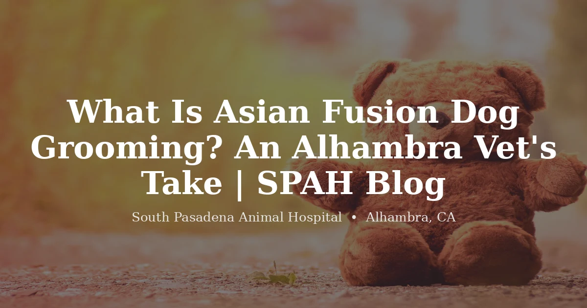

July 13, 2026 · 6 min read
What Is Asian Fusion Dog Grooming?

If you walk Main Street on a Saturday you'll see it without knowing the name for it — the little dogs with impossibly round heads, legs like plush cylinders, faces scissored into something closer to a stuffed animal than a poodle. That's Asian Fusion, and the San Gabriel Valley has more of it than most of the country.
Owners ask us about it constantly, usually some version of: is that okay for my dog? It's a fair question and the answer isn't a clean yes or no. So here's what the style actually is, and the one part of it we do care about clinically.
It's an aesthetic, not a haircut
The style grew out of grooming culture in Japan, Korea, and Taiwan, and the underlying idea is a real departure from how Western grooming thinks.
A traditional breed cut starts from a question about the breed: what is a miniature poodle supposed to look like? There's a standard, and the groom works toward it. Asian Fusion throws that out and asks a different question — what would this specific dog look like at its absolute cutest? The answer usually involves softening everything. Round the head into a sphere. Leave the legs full and cylindrical so they read as plush. Shorten the body to exaggerate the proportions. Scissor the face into expression rather than structure.
The word "fusion" is doing real work there. It blends that styling instinct with Western scissoring technique, and there isn't one canonical look — it's a family of looks. Which is exactly why, when someone tells us they asked for Asian Fusion and got something they didn't expect, the fix is usually a photo rather than a better vocabulary.
Which dogs it actually works on
Coat decides this, not preference. The style needs hair that keeps growing and holds a scissored shape — poodles, doodles, bichons, shih tzus, maltese, and the endless fluffy mixes we see around Alhambra. Those coats can be sculpted and will hold the form.
Double-coated dogs are out, and this is where we occasionally have to be the bad guy. A husky or a shepherd cannot wear this style, because it depends on leaving length that a double coat can't safely carry, and getting there means cutting into a coat that shouldn't be cut. And short-coated dogs — a frenchie, a beagle — there's simply nothing there to sculpt. No amount of skill produces a round head on a dog with a quarter inch of hair.
The part we care about
Here's our actual clinical opinion, and it's narrower than people expect: the style is not the problem. The upkeep is.
Everything that makes an Asian Fusion cut look the way it does comes from leaving length — the plush legs, the full round head. And length is exactly what mats. A dog in this style tangles faster than the same dog kept short, and it tangles in the worst places: the legs, behind the ears, the armpits, the face where you're least likely to look. Mats tighten against the skin, pull constantly, and hurt. We've talked about that in more detail in our post on how often to groom your dog.
So the honest test isn't whether the style is safe. It's whether your household is. A dog in an Asian Fusion cut needs brushing at home and a groom roughly every four to six weeks, and if that's your rhythm, the style is completely fine and your dog will look wonderful. If the reality is that your dog gets brushed when someone remembers and groomed when it gets bad, this is the wrong style — not because it's cruel, but because that combination reliably produces a matted dog, and we're the ones who see what's underneath when it finally comes off.
We'd rather have that conversation with you up front than shave a matted dog down in six months.
If you want the look
Bring a photo. Genuinely — the term covers enough ground that words alone lead to disappointment, and every groomer's mental image is a little different.
Then be ready for an honest read on your dog's coat. A dog carrying mats has to come shorter before any styling is possible, because you cannot sculpt around a tangle — and a groomer who tells you that isn't upselling you, they're telling you the truth. Coat texture matters too. Some coats hold a round shape beautifully and some fight it the whole way.
Our grooming happens inside the clinic at 3116 W Main St in Alhambra, and style cuts are on the menu. If you're curious whether your dog's coat suits the look — or whether the schedule it needs suits your life — get in touch or take a look at our dog grooming page. We'll give you a straight answer, including if the answer is that your dog would be happier kept shorter.
Questions we hear often
What is Asian Fusion dog grooming?
It's a grooming aesthetic that developed in Japan, Korea, and Taiwan. Instead of following a traditional breed standard, it shapes the dog toward soft, rounded, doll-like proportions — a full round head, plush cylindrical legs, a shortened body, and scissored detail around the face. Where a Western breed cut asks what a poodle is supposed to look like, Asian Fusion asks what this particular dog would look like at its cutest.
Which dogs suit an Asian Fusion cut?
Dogs with dense, continuously growing coat that holds a scissored shape — poodles, doodles, bichons, shih tzus, maltese, and similar mixes. Double-coated breeds like huskies and shepherds aren't suited to it, because the style depends on leaving length a double coat can't safely carry. Short-coated dogs have nothing to sculpt.
Is Asian Fusion grooming bad for dogs?
The style itself isn't harmful — the upkeep is where problems appear. Because it leaves considerable length, especially on the legs and head, a dog in this cut mats faster than the same dog kept short, and mats tighten against the skin and become painful. It's fine for a dog whose owner brushes regularly and grooms on schedule, and a poor fit for a household that can't keep that up.
How often does an Asian Fusion cut need maintaining?
More often than a standard trim — many dogs in this style are groomed every four to six weeks, with regular brushing at home in between. The rounded shape depends on even coat length, so it loses form as it grows out, and the length that makes it look good is the same length that tangles.
Can you ask a groomer for a specific Asian Fusion look?
Yes, and bringing a photo is genuinely useful, because the style covers a wide range of looks and the words mean different things to different people. Just be ready for an honest conversation about your dog's actual coat — a dog carrying mats often has to be taken shorter before styling is possible. Ask us about your dog's coat.